DPF3 Part 2: A question of centring¶
Introduction¶
The second part of this tutorial continues from the results obtained in the DPF3 Part 1: Correcting poor initial geometry tutorial. You should work through that first to fix the incorrect beam centre recorded in the image headers and produce a correct indexing solution. Following those steps to the end, you will have two files:
bravais_setting_5.json- the experimental geometry including a crystal model with a primitive orthorhombic latticeindexed.pickle- the spot list from indexing
Viewing these files using the dials.image_viewer and the reciprocal lattice points in the dials.reciprocal_lattice_viewer reveals the presence of split spots and minor lattices. Nevertheless, these do not cause great difficulties in processing. More thought is required when considering the issue of possible pseudocentring. The structure can be solved in more than one space group. In cases such as this, the true symmetry may not be known until late stages of refinement. Even then, it might not be completely clear. Here we will investigate some features of the images that warn us of the challenges that lie ahead.
If we were to integrate this dataset using the oP solution from the first part
and continue on to the CCP4 data reduction pipeline, we would see
that Pointless chooses the space group 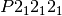 but
warns that the data were integrated on a primitive lattice, but may belong to
a centered lattice. Accordingly, cTruncate finds strong evidence
for translational NCS, for this basis along a vector of 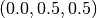. The fact that this vector corresponds to a half integral step along a
face diagonal should lead us to question the space group assignment.
Questioning the lattice symmetry¶
It is always good advice to spend some time looking at the images and the reciprocal lattice before integrating a dataset. If we did so, we may notice the subtle features in the diffraction pattern that are the cause of the warnings from Pointless and cTruncate.
First the reciprocal lattice:
dials.reciprocal_lattice_viewer bravais_setting_5.json indexed.pickle

Here the view has been aligned almost down the long axis of the reciprocal
cell, which is 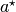 for this choice of basis vectors. We see the
columns of reciprocal lattice points with Miller indices differing by
 as lines of closely-spaced points. However, we can also see that
the lengths of the lines alternate between long and short as we move, for
example, in the 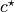 direction. At this point should suspect a
pseudocentred lattice.
as lines of closely-spaced points. However, we can also see that
the lengths of the lines alternate between long and short as we move, for
example, in the 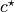 direction. At this point should suspect a
pseudocentred lattice.
Now the image viewer:
dials.image_viewer bravais_setting_5.json indexed.pickle

Here we have zoomed in on a region of the central module on the 5th image. The
line of indexed spots have Miller indices in 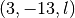. Looking closely
we see that spots with even  are systematically weaker than spots with
odd . This fits the theory of a pseudocentred lattice, however we
also see that the spot profile differs between the two sets.
are systematically weaker than spots with
odd . This fits the theory of a pseudocentred lattice, however we
also see that the spot profile differs between the two sets.
To investigate further we can enforce the centred lattice and see where that takes us...
Converting to a centred lattice¶
Although dials.refine_bravais_settings did not give us a centred lattice as an option, it is easy to convert the current primitive solution. First, note that for the currently chosen basis, the centring operation should be on the A face, not the conventional C face:
dials.reindex bravais_setting_5.json space_group=A222
Here is part of the output:
New crystal:
Crystal:
Unit cell: (56.312, 99.662, 121.361, 90.000, 90.000, 90.000)
Space group: A 2 2 2
We now have a face centred space group, but the indexed reflections still include those which are now disallowed by the centring operation. An easy way to fix this is simply to reindex the spot list using the new model. We also request output of the unindexed reflections to explore later:
dials.index reindexed_experiments.json strong.pickle output.unindexed_reflections=unindexed.pickle
This produces a properly indexed spot list, but the space group is in an unconventional setting. We can fix this as follows:
dials.refine_bravais_settings experiments.json indexed.pickle
Solution 5 is what we want:
----------------------------------------------------------------------------------------------------------------
Solution Metric fit rmsd min/max cc #spots lattice unit_cell volume cb_op
----------------------------------------------------------------------------------------------------------------
* 5 0.0000 0.096 0.760/0.855 20000 oC 99.64 121.38 56.32 90.00 90.00 90.00 681108 b-c,b+c,a
* 4 0.0000 0.095 0.768/0.768 20000 mC 99.64 121.38 56.32 90.00 90.01 90.00 681106 b-c,b+c,a
* 3 0.0000 0.095 0.760/0.760 20000 mC 121.35 99.61 56.30 90.00 89.98 90.00 680582 b+c,-b+c,a
* 2 0.0000 0.095 0.855/0.855 20000 mP 78.43 56.27 78.48 90.00 101.23 90.00 339743 -b,a,c
* 1 0.0000 0.096 -/- 20000 aP 56.26 78.41 78.46 78.77 89.99 90.00 339502 a,b,c
----------------------------------------------------------------------------------------------------------------
The table tells us that the indexed spots need a change of basis to be consistent with the conventional oC lattice:
dials.reindex indexed.pickle change_of_basis_op=b-c,b+c,a
This gives us reindexed_reflections.pickle. Before passing this along with
bravais_setting_5.json to refinement and then to integration it is worth
exploring this result with dials.image_viewer and
dials.reciprocal_lattice_viewer.
Here is a view of the same region of image 5 as we saw before, but now with only the spots allowed by centring being indexed:

Now a view of the reciprocal lattice, aligned down the axis to show off the systematic absences.

Exploring the unindexed reflections¶
When we indexed with the oC lattice we wrote out the unindexed reflections as a separate file. We know that the spots in the positions disallowed by the oC lattice do themselves form an orthorhombic lattice. In views from the dials.reciprocal_lattice_viewer you may also have seen hints of a third lattice in some parts of reciprocal space. We might try to index these lattices now:
dials.index optimized_datablock.json unindexed.pickle output.experiments=minor.json output.reflections=minor.pickle unit_cell="99 121 56 90 90 90" space_group=P222 max_lattices=2
Here is some output:
model 1 (12265 reflections):
Crystal:
Unit cell: (100.027, 121.370, 56.258, 90.000, 90.000, 90.000)
Space group: P 2 2 2
model 2 (2969 reflections):
Crystal:
Unit cell: (99.735, 121.858, 56.487, 90.000, 90.000, 90.000)
Space group: P 2 2 2
The first lattice is essentially the same as our original primitive solution, however because we have now excluded all the reflections that were indexed by the centred lattice, this model now only indexes the spots that should be systematically absent with an oC lattice. The second lattice comes from a separate crystallite, rotated about 11 degrees from the first and therefore easily disentangled from the others. We can combine this result with the previous one:
dials.combine_experiments bravais_setting_5.json reindexed_reflections.pickle minor.json minor.pickle beam=0 detector=0 scan=0 goniometer=0 compare_models=False
Here, the beam=0 etc. specify that the combined result should have all
experimental models apart from the crystal taken from the first experiment,
which is the one described by bravais_setting_5.json. The option
compare_models=False is required in order to force this. The result is
about 65000 indexed reflections, split between three lattices:
----------------------
| Experiment | Nref |
----------------------
| 0 | 50384 |
| 1 | 12265 |
| 2 | 2969 |
----------------------
Here is a view of reciprocal space, aligned down the shared axes of the oC lattice, and its complement, the oP lattice that indexes the disallowed reflections:
dials.reciprocal_lattice_viewer combined_experiments.json combined_reflections.pickle

It is worth spending some time with the
dials.reciprocal_lattice_viewer at different zoom levels and
orientations, and with different Min Z and Max Z limits. See how the
lattice of ‘disallowed’ reflections is stronger (i.e. more sufficiently strong
spots found) in latter half of the dataset (images 100 onwards).
We can see this more directly if we create an HTML report for the combined experiments:
dials.report combined_experiments.json combined_reflections.pickle
Load the resulting dials-report.html in a web browser. This includes
a useful plot of the number of indexed reflections for each lattice versus
the image number. Unfortunately the colours of curves on this plot do not
match the colours in the dials.reciprocal_lattice_viewer!
Nevertheless, the plot shows how the reflections allowed for the oC lattice
dominate throughout the data collection. The second ‘lattice’, which
consists only of the reflections of the oP solution that are disallowed by
the oC reflection conditions, is present from the start but becomes more
prominent in the second half of the data collection. The third lattice is a
genuinely separate component, misaligned from the frst by about 11 degrees,
and is present only on images in the first quarter of the dataset.

Intriguingly, the pattern of number of found strong spots for lattice 2
(which roughly corresponds to the intensity of those spots) follows a
sinusoidal pattern, which is weakest around image 60 and strongest around
image 150 (after a 90 degrees rotation of the crystal). Using the image
viewer with the Basis vectors button ticked you can see how this
corresponds to being weakest when the beam is approximately parallel to the
plane of the pseudocentred C face, and stronger when the beam is orthogonal
to that face, that is when the suggested tNCS vector is orthogonal to the
beam:

Centred or pseudocentred?¶
We have two ways we can model this crystal:
- Primitive orthorhombic () with translational NCS mimicking centring on the C face
- C-centred orthorhombic (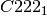), ignoring the systematically weak intensities
The purpose of this exercise was mainly to demonstrate the use of DIALS viewers as diagnostic tools and some of the less commonly used options that allowed us to isolate the sub-lattice of strong reflections before integration.
If we continued with integration of the data and proceeded onwards to structure solution, model rebuilding and refinement, then we would have reproduced the structure presented by PDB entry 5I3L. Refinement of this structure with isotropic B-factors against the data integrated with DIALS results in an R-cryst of 0.18 and an R-free of 0.21.
On the contrary, if we had chosen the primitive lattice and included the systematically weak reflections in integration, the structure solution process would not have been straightforward and the results would be ambiguous, even if we would have used e.g. chain A of the PDB entry 5I3L as the search model for molecular replacement. Firstly, there would have been several different molecular replacement solutions with almost equal scores and subsequent refinement would favour with a small margin of only a few percent in R factors compared to other solutions in space groups 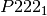 and 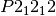. In all these solutions the pseudo-translation vector relating two dimers would deviate by no more than 0.2 Angstroms from 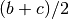 (this corresponds to the crystallographic translation 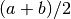 in ). We did not try to rebuild the solution but instead superposed two copies of the entire PDB entry 5I3L onto the two dimers forming its asymmetric unit. We ended up with R-cryst of 0.27 and R-free of 0.29, which are considerably worse than the values for the structure.
There could be several reasons for poor refinement statistics in  : the space group assignment was incorrect, the refinement
program had problems with the weak structure amplitudes, or the crystal was
partially disordered or has undergone a phase transition during data
collection and it was not possible in the first place to describe the weak
reflections with a single crystal structure. In any case, the ‘thorough’
model gives no improvement in density or refinement
statistics and provides no new structural information and we conclude that
it should not be used for structural analysis. Ultimately it is true that
for a real crystal any space group assignment is only an approximation.
: the space group assignment was incorrect, the refinement
program had problems with the weak structure amplitudes, or the crystal was
partially disordered or has undergone a phase transition during data
collection and it was not possible in the first place to describe the weak
reflections with a single crystal structure. In any case, the ‘thorough’
model gives no improvement in density or refinement
statistics and provides no new structural information and we conclude that
it should not be used for structural analysis. Ultimately it is true that
for a real crystal any space group assignment is only an approximation.
Conclusions¶
- Diffraction data may display a sub-lattice of weak spots (pseudocentring) indicating pseudo-translation in the crystal structure and, possibly, some degree of crystal disorder.
- In many cases the weak reflections are not as weak as in this example and their intensities grow or oscillate with resolution. In those cases, good maps and refinement statistics can only be obtained by refinement against all the available data. It is important then to make sure that indexing picks up all the spots, strong and weak.
- In many other cases, similar to the current example, the weak spots have no practical meaning and should be excluded. Ideally this should be done before the integration, which we did here in the section Converting to a centred lattice.
- Use the DIALS viewers to make sure you know what to expect from your data!
Acknowledgements¶
Thanks to Wolfram Tempel for making this dataset available and inspiring the writing of this tutorial. Thanks also to Andrey Lebedev for detailed analysis of the primitive versus the centred lattice structures.